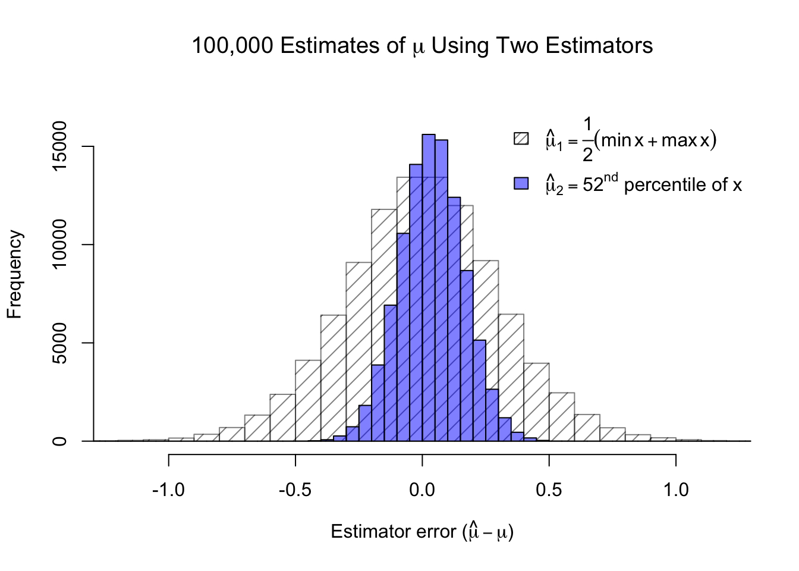

Not all estimators are created equal. Some estimators are worse than others, and they can be better or worse in different ways. Let’s pretend we have a normally distributed population (such as people’s heights, or stock returns), and we would like to estimate the true mean of the population \(\mu\) from a sample of 100 observations, \(\boldsymbol{x}\). We have already learned that the maximum likelihood estimator for the true mean is \(\bar{x}\), the sample mean. What if I forced you to pick one of two alternative estimators:
You may not yet be an expert statistician, but you can probably guess something about the second estimator: \(\hat{\mu}_2\) will generally overestimate the true mean. The 50th or 51st observation out of 100 would generally be more central.
Code
#bias-variance tradeoff of normal estimatorsset.seed(2001)norm.samp <-matrix(rnorm(10000000),ncol=100)norm.samp <-t(apply(norm.samp,1,sort))mu.est1 <- (norm.samp[,1]+norm.samp[,100])/2mu.est2 <- norm.samp[,52]hist(mu.est1,col='#00000080',density=10,breaks=seq(-1.6,1.6,0.1),ylim=c(0,17000),xlim=c(-1.2,1.2),main=expression(paste('100,000 Estimates of ',mu,' Using Two Estimators')),xlab=expression(paste('Estimator error (',hat(mu)-mu,')')))hist(mu.est2,col='#0000ff80',add=TRUE,breaks=seq(-1.6,1.6,0.05))legend(x='topright',legend=c(expression(hat(mu)[1] ==frac(1,2)(min(x)+max(x))),expression(paste(hat(mu)[2] ==52^nd,' percentile of x'))),density=c(20,-1),fill=c('#00000080','#0000ff80'),bty='n')

Figure 3.1: The bias and variance of two different estimators
In the figure above, I simulated 100,000 different samples of 100 observations each, and plotted a histogram of how far from the true mean these two estimators were each time. You can see that while the 52nd ordered observation tends to slightly overestimate the true mean, it usually produces a much closer estimate than the other estimator (the straight average of the sample min and max). In fact, in almost three-quarters of the simulations, \(\hat{\mu}_2\) produced a closer estimate of the true mean than \(\hat{\mu}_1\). We call these concepts the bias and the variance of an estimator. Bias measures how much the estimator systematically overestimates or underestimates the true parameter. Variance measures how much its estimates change sample to sample.
Let \(\theta\) be a parameter from a random variable \(X\) and let \(\hat{\theta}\) be an estimator of that parameter from a sample of data x. If we treat \(\hat{\theta}\) as a random variable dependent upon the sample, then we may define the bias of an estimator as:
\[\mathrm{Bias}(\hat{\theta})=\mathbb{E}[\hat{\theta}] - \theta\] And if \(\mathbb{E}[\hat{\theta}] = \theta\) for all values of \(\theta\), we say that \(\hat{\theta}\) is unbiased.
Similarly, we may define the variance of an estimator as:
Lastly, the square root of the variance of an estimator – which we could call the standard deviation of the estimator – is instead usually called the standard error:
The sport of archery provides a useful analogy for illustrating bias and variance. Imagine different archers (estimators) firing at the target. They are all aiming for the same goal (the true value of the parameter), but they can be off in different ways. One might have a tight grouping of shots that are all off-target in the same way (bias). Another might be hitting every corner of the target but, on average, is neither too high nor too low (variance).
Figure 3.2: Archery analogy for the concepts of bias and variance
There are other properties, such as consistency or efficiency, which can make an estimator desirable or undesirable, but the variance and bias of an estimator are generally the two most-discussed properties.1 They relate to a third metric which may be familiar from a machine learning perspective: mean squared error (MSE).
Essentially, the mean squared error of an estimator can always be decomposed into a systematic bias component and an idiosyncratic variance component. Between two models with the same MSE, a lower variance implies a higher bias and vice versa. This property is called the bias-variance tradeoff and will affect our modeling work in later sections.
Visualizer: Normal estimation
There are times we prefer maximum likelihood estimators (MLEs) and times we do not. Consider estimating the mean \((\mu)\) and standard deviation \((\sigma^2)\) of a normal distribution from a sample. I will set true values of \(\mu = 100\) and \(\sigma = 20\). You can choose a sample size, and I will show you how various estimators perform among 10,000 simulated samples of that size.
We have many choices for an estimator of the mean, \(\mu\). The MLE is the sample average, \(\bar{x}\), but we could also choose the median of \(\boldsymbol{x}\). Note that both estimators are unbiased, but that the sample average has lower variance, and that the effect grows for large sample sizes.
We have fewer sensible estimators for the standard deviation, \(\sigma\). The MLE is the ‘uncorrected’ sample standard deviation, \(\sqrt{\sum_i (x_i - \bar{x})^2 / n}\). However, you can see that when sample sizes are small, this estimator is biased; it underestimates the true standard deviation. A slight bias remains even at large sample sizes, but would be hard for the eye to detect. The ‘corrected’ sample standard deviation, \(\sqrt{\sum_i (x_i - \bar{x})^2 / (n - 1)}\), remains unbiased and we usually choose this estimator even though it is not the MLE solution.
#| '!! shinylive warning !!': |
#| shinylive does not work in self-contained HTML documents.
#| Please set `embed-resources: false` in your metadata.
#| standalone: true
#| viewerHeight: 900
library(shiny)
library(bslib)
ui <- page_fluid(
tags$head(tags$style(HTML("body {overflow-x: hidden;}"))),
title = "Variance and bias of Normal estimators",
fluidRow(column(width=3,""),column(width=6,sliderInput("nsamp", "N (sample size)", min=5, max=200, value=25)),column(width=3,"")),
fluidRow(column(width=12,plotOutput("distPlot1"))),
fluidRow(column(width=12,plotOutput("distPlot2"))))
server <- function(input, output) {
x <- reactive({matrix(rnorm(10000*input$nsamp,100,20),nrow=10000)})
xbar <- reactive({apply(x(),1,mean)})
xmed <- reactive({apply(x(),1,median)})
xsd <- reactive({apply(x(),1,sd)})
xrmse <- reactive({sqrt(xsd()^2*(input$nsamp-1)/input$nsamp)})
output$distPlot1 <- renderPlot({hist(xbar(), breaks=seq(min(xbar(),xmed()),max(xbar(),xmed()),length.out=31), main='10,000 estimates for the mean', xlab='Mu-hat', ylab='Frequency', col='#ff000080'); hist(xmed(), breaks=seq(min(xbar(),xmed()),max(xbar(),xmed()),length.out=31), col='#0000ff80', add=TRUE); legend(x='topright', legend=c('Sample mean','Sample median'), fill=c('#ff000080','#0000ff80'), bty='n')})
output$distPlot2 <- renderPlot({hist(xrmse(), breaks=seq(min(xrmse(),xsd()),max(xrmse(),xsd()),length.out=31), main='10,000 estimates for the std dev', xlab='Sigma-hat', ylab='Frequency', col='#ff000080'); hist(xsd(), breaks=seq(min(xrmse(),xsd()),max(xrmse(),xsd()),length.out=31), col='#0000ff80', add=TRUE); legend(x='topright', legend=c('Uncorrected: /(n)','Corrected: /(n-1)'), fill=c('#ff000080','#0000ff80'), bty='n')})
}
shinyApp(ui = ui, server = server)
Briefly, a consistent estimator produces better and better estimates as your sample size increases, while an efficient estimator makes the best possible use of the sample’s information.↩︎